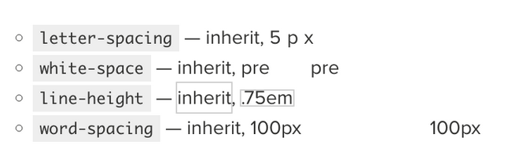

Заметки про css
-
Все является прямоугольником
- border-radius - cкругляет углы блока outline и box-shadow - не оказывают влияния на раскладку
-
block, inline, inline-block
-
block 1
block 2
block 3
inline 1
inline 2
inline 3
inline 4
inline 5
inline 6
inline 7
inline 8
inline 9
inline 10
inline 11
inline 12
inline 13
inline 14
inline-block 1
inline-block 2
inline-block 3
-
block
- Ширина ограничена родителем
- Влияют свойства width и height
- Высота зависит от контента
- Отобрают margin,padding со всех сторон
-
inline
- Это просто слово в строке
- Не влияют свойства width и height
- Ширина и Высота зависит от контента
- Отобржают margin,padding но только справа и слева
-
inline-block
- Влияют свойства width и height
- Ширина и Высота зависит от контента
- Отображают margin,padding со всех сторон
- Цвет, факты
- Цвета отображаются по разному в разных браузерах
- На скриншоте не всегда будут те же цвета, что и на мониторе в момент снимка
- Различное отображение цвета на различных устройствах
- Расстояние и угол зрения
- Качество дисплея
-
Популяризация цветов
- Шрифт
